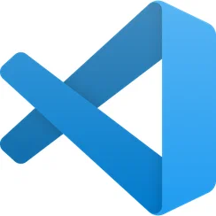

Visual Studio Code
Visual Studio Code combines the simplicity of a source code editor with powerful developer tooling, like IntelliSense code completion and debugging.
First and foremost, it is an editor that gets out of your way. The delightfully frictionless edit-build-debug cycle means less time fiddling with your environment, and more time executing on your ideas.
Visual Studio Code supports macOS, Linux, and Windows - so you can hit the ground running, no matter the platform.
For serious coding, you'll often benefit from tools with more code understanding than just blocks of text. Visual Studio Code includes built-in support for IntelliSense code completion, rich semantic code understanding and navigation, and code refactoring.
NotePad++
.webp)
NotePad++ is a free and open-source text and source code editor for use with Microsoft Windows. It supports tabbed editing, which allows working with multiple open files in a single window. The product's name comes from the C postfix increment operator; it is sometimes referred to as npp or NPP.[5]
Notepad++ is distributed as free software. At first, the project was hosted on SourceForge.net, from where it was downloaded over 28 million times[6][7] and twice won the SourceForge Community Choice Award for Best Developer Tool.[8] The project was hosted on TuxFamily [fr] from 2010 to 2015; since 2015, Notepad++ has been hosted on GitHub.[9] Notepad++ uses the Scintilla editor component.
Sublime Text
.webp)
Sublime Text is a shareware text and source code editor available for Windows, macOS, and Linux. It natively supports many programming languages and markup languages. Users can customize it with themes and expand its functionality with plugins, typically community-built and maintained under free-software licenses. To facilitate plugins, Sublime Text features a Python API. The editor utilizes minimal interface and contains features for programmers including configurable syntax highlighting, code folding, search-and-replace supporting regular-expressions, terminal output window, and more. It is proprietary software, but a free evaluation version is available.
Intellij
.webp)
IntelliJ IDEA is an integrated development environment (IDE) written in Java for developing computer software written in Java, Kotlin, Groovy, and other JVM-based languages. It is developed by JetBrains (formerly known as IntelliJ) and is available as an Apache 2 Licensed community edition,[2] and in a proprietary commercial edition. Both can be used for commercial development.
Atom

Atom was a free and open-source text and source code editor for macOS, Linux, and Windows with support for plug-ins written in JavaScript, and embedded Git Control. Developed by GitHub, Atom was released on June 25, 2015.[8]
Most of the extending packages have free software licenses and are community-built and maintained.
On June 8, 2022, GitHub announced that Atom's end-of-life would occur on December 15 of that year, "in order to prioritize technologies that enable the future of software development", specifically its GitHub Codespaces and Microsoft's Visual Studio Code.[9][10]